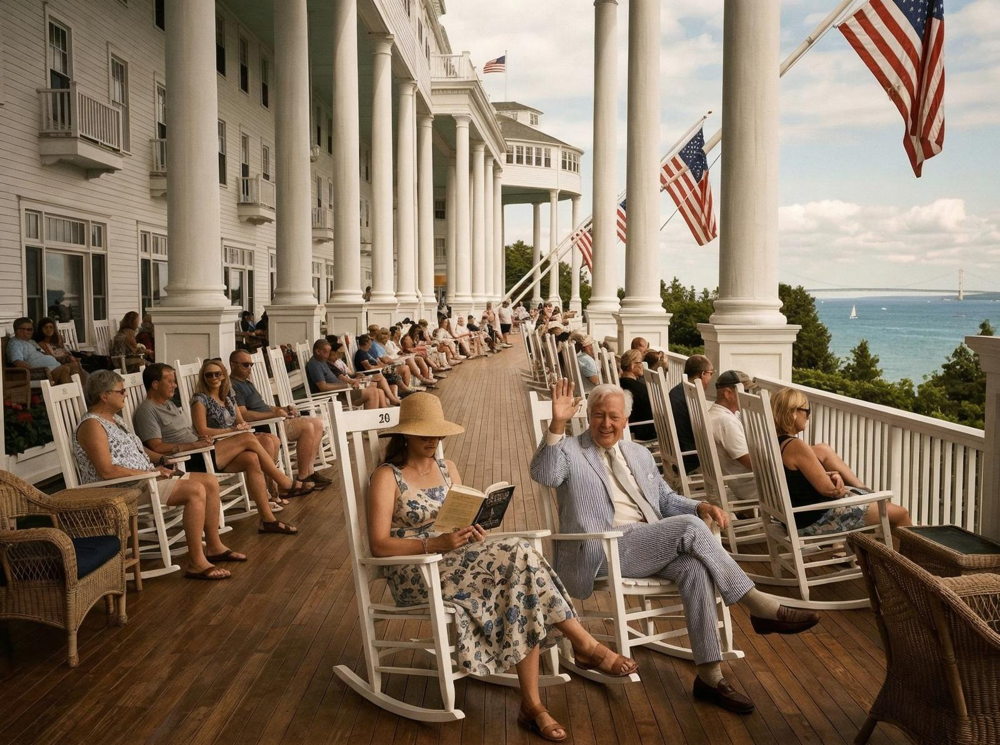
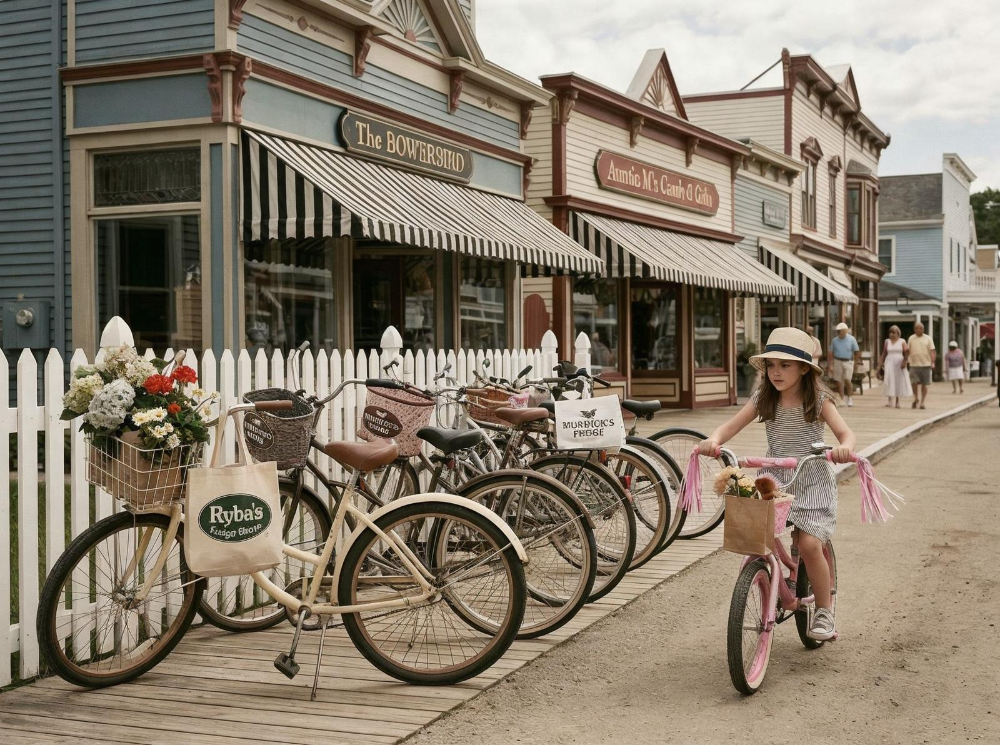

Când am coborât de pe feribot în Mackinac Island, primul lucru pe care l-am auzit au fost copitele pe piatră. Nu motoare, nu claxoane — doar cai. Mackinac Island, situată în Lacul Michigan între Upper și Lower Peninsula din Michigan, este o insulă de 10 km pătrați unde automobilele sunt interzise din 1898.
Legenda spune că primul automobil a ajuns pe insulă în 1898, iar locuitorii au fost atât de enervați de zgomot și de miros încât au interzis automobilele complet. De atunci, căruțele cu cai sunt principalul mijloc de transport, iar insula a devenit faimosă pentru această tradiție.
Ceea ce e interesant e că insula nu e doar un muzeu în aer liber — e o comunitate vie. Există aproximativ 500 de locuitori permanenți, care trăiesc, muncesc, merg la școală, totul fără mașini. Există un spital, o școală, un hotel, restaurante — toate accesibile doar pe jos sau cu căruțe.

Mergi pe străzile din orașul Mackinac și vezi casele victoriene, hotelurile istorice, magazinele cu suveniruri. E un loc care pare rupt dintr-o altă epocă — unde viteză e irelevantă, unde zgomotul e minim, unde timpul pare să curgă mai încet.
Mackinac Island are o istorie lungă. A fost un important centru comercial în secolele XVIII și XIX, un punct strategic în războaiele dintre britanici și americani, o destinație turistică populară încă de la sfârșitul secolului XIX.
E genul de loc pe care îl înțelegi doar când mergi pe stradă și vezi un copil mergând la școală pe bicicletă, când vezi o livrare făcându-se cu o căruță, când auzi liniștea care înlocuiește zgomotul orașului. Mackinac Island nu e doar o destinație turistică — e un alt mod de viață.

Uită ce știați despre orașe moderne. Mackinac Island nu e despre progres și development — e despre conservare, despre tradiție, despre oameni care au ales să trăiască într-un ritmul lor. Unde automobilele sunt amintire, unde căruțele cu cai domnesc, unde 1898 pare să fie ieri.
Poate că nu vei locui niciodată pe o insulă fără mașini. Poate că nu vei avea niciodată o căruță cu cai. Dar merită să știi că există. Mackinac Island e un argument că există alternative la modernitate, că tradițiile pot supraviețui, că liniștea poate fi găsită chiar în mijlocul lacului Michigan.